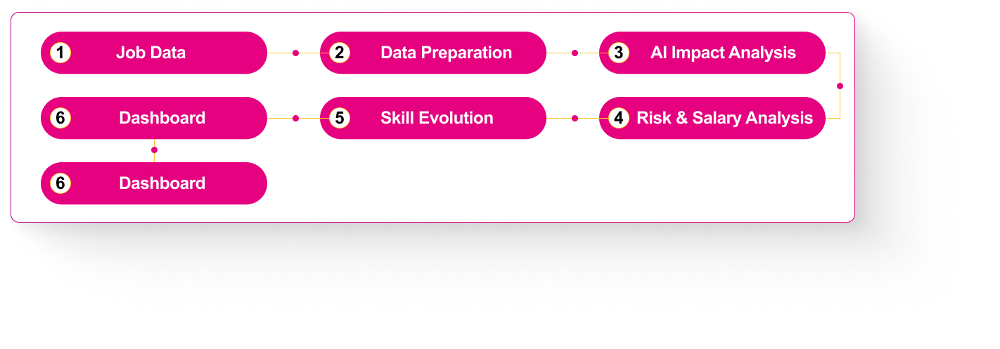

I built an end-to-end workforce analytics solution to analyze how AI is transforming jobs, skills, salaries, and automation risk from 2010 to 2025.
The project uses a synthetic global job-market dataset containing 5,000 job listings across 80+ countries, covering industries such as Technology, Finance, Healthcare, Manufacturing, Education, Retail, Energy, Government, and Agriculture.
The analysis was translated into two main outputs:
A dashboard for monitoring AI adoption, salary dynamics, automation risk, and industry maturity.
A data-driven presentation providing insights and recommendations for workforce strategy over the next five years.
The Problem
How should organizations respond to the rapid adoption of AI?
The client, Global Workforce Solutions, works with Fortune 500 companies that are facing uncertainty around AI-driven workforce transformation.
Organizations are faced with two contrasting decisions:
Should they reduce the workforce because of automation, or invest more in AI talent?
The challenge is complicated by three key uncertainties:
Which job roles and industries face the highest automation and displacement risk?
Does greater AI intensity in a role correspond with higher salary, and how large is the potential AI wage premium?
Which industries are still Emerging, which are Growing, and which have reached a Mature stage of AI adoption?
What I Did
Analyzed AI adoption signals, automation risk, salary dynamics, skill evolution, and industry AI ma turity across 5,000 global job listings spanning 80+ countries.
End-to-End
